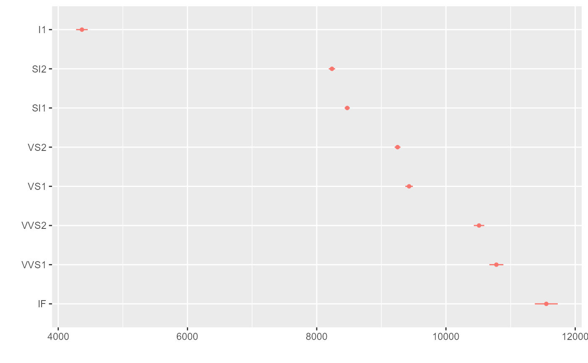

R/secret_weapon.R
secret_weapon.Rdsecret_weapon is a function for plotting regression results of multiple models as a 'secret weapon' plot
secret_weapon(x, var = NULL, ci = 0.95, margins = FALSE, by_2sd = FALSE, ...)
| x | Either a model object to be tidied with |
|---|---|
| var | The predictor whose results are to be shown in the 'secret weapon' plot |
| ci | A number indicating the level of confidence intervals; the default is .95. |
| margins | A logical value indicating whether presenting the average marginal effects of the estimates. See the Details for more information. |
| by_2sd | When x is a list of model objects, should the coefficients for predictors that are not binary be rescaled by twice the standard deviation of these variables in the dataset analyzed, per Gelman (2008)? Defaults to |
| ... | Arguments to pass to |
The function returns a ggplot object.
Andrew Gelman has coined the term "the secret weapon" for dot-and-whisker plots that compare the estimated coefficients for a single predictor across many models or datasets.
secret_weapon takes a tidy data frame of regression results or a list of model objects and generates a dot-and-whisker plot of the results of a single variable across the multiple models.
Tidy data frames to be plotted should include the variables term (names of predictors), estimate (corresponding estimates of coefficients or other quantities of interest), std.error (corresponding standard errors), and model (identifying the corresponding model).
In place of std.error one may substitute lb (the lower bounds of the confidence intervals of each estimate) and ub (the corresponding upper bounds).
Alternately, secret_weapon accepts as input a list of model objects that can be tidied by tidy (or tidy_parameters, parameters (with proper formatting)), or a list of such model objects.
library(dplyr) library(broom) # Estimate models across many samples, put results in a tidy data frame by_clarity <- diamonds %>% group_by(clarity) %>% do(tidy(lm(price ~ carat + cut + color, data = .))) %>% ungroup %>% rename(model = clarity) # Generate a 'secret weapon' plot of the results of diamond size secret_weapon(by_clarity, "carat")